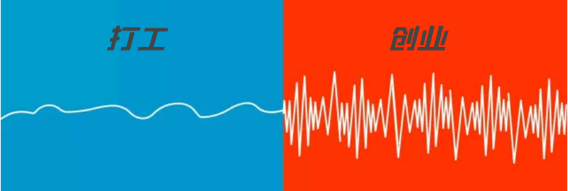

离职8年，创业8年，说一下真实感受
我是一个码农，会点前端，会点后台，也会点 C/C++。我也是一个站长，会玩 SEO，会写文章，也会搞点小钱钱。
2013 年毕业于西电电子科技大学，然后去了帝都写代码，title 是前端工程师；2014 年春天裸辞，开始全职运营C语言中文网，到现在快 8 年了。
8 年时间过得很快，我从少年熬成了大叔，连孩子都能打酱油了。
这期间我没有再参加工作，一直都是自由职业，虽然没有大富大贵，但是也没有饿死。
辞职后我没有混迹大城市，而是回到了老家——河北衡水。这是一个四线小城市，生活成本比较低，工作节奏比较慢，当然，也没有什么互联网氛围。
作为一个自由职业者，我无时无刻不在为生计发愁，所以心态非常不稳，时起时落。接下来，我就给大家分享一下自己的真实感受。
互联网是没有地理边界的，只要有一台电脑，有一个 WiFi，随时随地都能工作。
我是一个童心未泯的大叔，总想出去看看大好山河，但是前几年被家人限制不能外出，这几年又被疫情限制不能外出，所以才一直待在老家，否则我真的会一边游玩，一边创作，那是何等的惬意。
生而为人，就要为自己活一次。
时间自由的另外一个好处就是可以避开人流高峰，减少排队或者等待，比如你可以工作日去医院看病，或者九点上班五点下班，或者在法定节假日以外的时间出游。
但是，话又说回来，时间自由也不一定是好事，如果你不能合理安排作息，就很容易导致睡眠障碍，或者精神萎靡，也就是常说的亚健康。
刚刚离职的第一年，我都是熬夜搞创作，凌晨两三点才睡觉，一直睡到明天十一点。后来为了回归正常生活，我才改变了作息时间，基本每天十一点左右睡觉，七点左右起床。
赚钱没有固定的模式，你有千万条道路，不同的选择会带来不同的结局，你可能一飞冲天，也可能小富即安，还可能会中途夭折。
如果第一种尝试不成功，你就必须换一种打法，或者被迫转型。
转型是非常痛苦的，你需要跳出舒适圈，做自己不熟悉的事情，往往几个月以后才能找到一点感觉。这段时间，就是你的适应期。
当你最终找到了一条发财致富的道路，你发现自己还是不能停下来，因为你还需要让自己的项目保持增长，不断给自己带来成就感，或者给团队带来新希望。
如果项目营收下滑，或者长期停滞不前，你就会变得焦虑，并开始寻找新的打法。
也就是说，你时时刻刻都在想着赚钱，没有停下来的时候。
程序员都有一技之长，基本不用担心失业，即使公司倒闭了，你也可以再找到一份对等的工作，收入不会减少，生活质量不会降低。
但是，创业却是另一番场景，成功只是小概率事件，失败才是一种常态。一旦你的项目遭遇不测，你将面临生存问题，甚至债务缠身，这种压抑感足以让你寝食难安，或者嚎啕大哭。
即使你的项目非常顺利，往往也只有几年的增长时间，几年以后你还是会触碰到天花板，这个时候你就会变得焦虑和急躁，不断尝试新的打法，或者切换赛道。
只要你开始折腾新东西，你就会非常疲惫。更加尴尬的是，转型其实也是一次新的创业，你仍然会面临很高的失败风险。
也就是说，一旦你走上创业的这条道路，你就得一直处于创业状态，既要享受成功的喜悦，也要承受失败的落魄，所以心态就是大起大落，就像海面上的浪头一样。
虽然我是一个码农，但我有一颗不羁的内心，我想规划自己的时间，安排自己的人生，所以我抗拒上班，那些条条框框让我非常难受。
人生不过几十载，我想为自己活一次；世界那么大，我也想出去看看。
平平淡淡没意思，我更喜欢跌宕起伏，虽然创业很苦逼，但是我享受这个过程。
2013 年毕业于西电电子科技大学，然后去了帝都写代码，title 是前端工程师；2014 年春天裸辞，开始全职运营C语言中文网，到现在快 8 年了。
8 年时间过得很快，我从少年熬成了大叔，连孩子都能打酱油了。
这期间我没有再参加工作，一直都是自由职业，虽然没有大富大贵，但是也没有饿死。
辞职后我没有混迹大城市，而是回到了老家——河北衡水。这是一个四线小城市，生活成本比较低，工作节奏比较慢，当然，也没有什么互联网氛围。
衡水最出名的东西有两样，一个是教育界的衡水一中，一个是白酒界的衡水老白干。
刚开始我一个人在家 soho，现在有了一个小团队，也有了一个工作室。这一路走来，各种磕磕绊绊，各种喜怒哀乐，开心的时候觉得自己是人生赢家，沮丧的时候想躺平摆烂，回村里养老。作为一个自由职业者，我无时无刻不在为生计发愁，所以心态非常不稳，时起时落。接下来，我就给大家分享一下自己的真实感受。
1. 时间
自由职业者最不缺的就是时间，而且完全受自己把控。你可以从早忙到晚，也可以熬夜刷电视剧，甚至还可以回到村里享受田园生活。互联网是没有地理边界的，只要有一台电脑，有一个 WiFi，随时随地都能工作。
我是一个童心未泯的大叔，总想出去看看大好山河，但是前几年被家人限制不能外出，这几年又被疫情限制不能外出，所以才一直待在老家，否则我真的会一边游玩，一边创作，那是何等的惬意。
生而为人，就要为自己活一次。
时间自由的另外一个好处就是可以避开人流高峰，减少排队或者等待，比如你可以工作日去医院看病，或者九点上班五点下班，或者在法定节假日以外的时间出游。
但是，话又说回来，时间自由也不一定是好事，如果你不能合理安排作息，就很容易导致睡眠障碍，或者精神萎靡，也就是常说的亚健康。
刚刚离职的第一年，我都是熬夜搞创作，凌晨两三点才睡觉，一直睡到明天十一点。后来为了回归正常生活，我才改变了作息时间，基本每天十一点左右睡觉，七点左右起床。
2.赚钱
离开公司以后，你就没有了赚钱的平台，你需要自己开创一番事业，并在这个领域持续深耕。赚钱没有固定的模式，你有千万条道路，不同的选择会带来不同的结局，你可能一飞冲天，也可能小富即安，还可能会中途夭折。
如果第一种尝试不成功，你就必须换一种打法，或者被迫转型。
转型是非常痛苦的，你需要跳出舒适圈，做自己不熟悉的事情，往往几个月以后才能找到一点感觉。这段时间，就是你的适应期。
当你最终找到了一条发财致富的道路，你发现自己还是不能停下来，因为你还需要让自己的项目保持增长，不断给自己带来成就感，或者给团队带来新希望。
如果项目营收下滑，或者长期停滞不前，你就会变得焦虑，并开始寻找新的打法。
也就是说，你时时刻刻都在想着赚钱，没有停下来的时候。
3. 心态
网络上有一张图片用来对比打工者和创业者的精神状态，我觉得非常真实，展示一下。

程序员都有一技之长，基本不用担心失业，即使公司倒闭了，你也可以再找到一份对等的工作，收入不会减少，生活质量不会降低。
但是，创业却是另一番场景，成功只是小概率事件，失败才是一种常态。一旦你的项目遭遇不测，你将面临生存问题，甚至债务缠身，这种压抑感足以让你寝食难安，或者嚎啕大哭。
即使你的项目非常顺利，往往也只有几年的增长时间，几年以后你还是会触碰到天花板，这个时候你就会变得焦虑和急躁，不断尝试新的打法，或者切换赛道。
只要你开始折腾新东西，你就会非常疲惫。更加尴尬的是，转型其实也是一次新的创业，你仍然会面临很高的失败风险。
也就是说，一旦你走上创业的这条道路，你就得一直处于创业状态，既要享受成功的喜悦，也要承受失败的落魄，所以心态就是大起大落，就像海面上的浪头一样。
我为什么创业？
我之所以选择创业，其实理由也很简单，仅仅是因为喜欢而已。虽然我是一个码农，但我有一颗不羁的内心，我想规划自己的时间，安排自己的人生，所以我抗拒上班，那些条条框框让我非常难受。
人生不过几十载，我想为自己活一次；世界那么大，我也想出去看看。
平平淡淡没意思，我更喜欢跌宕起伏，虽然创业很苦逼，但是我享受这个过程。
关注公众号「站长严长生」，在手机上阅读所有教程，随时随地都能学习。内含一款搜索神器，免费下载全网书籍和视频。

微信扫码关注公众号